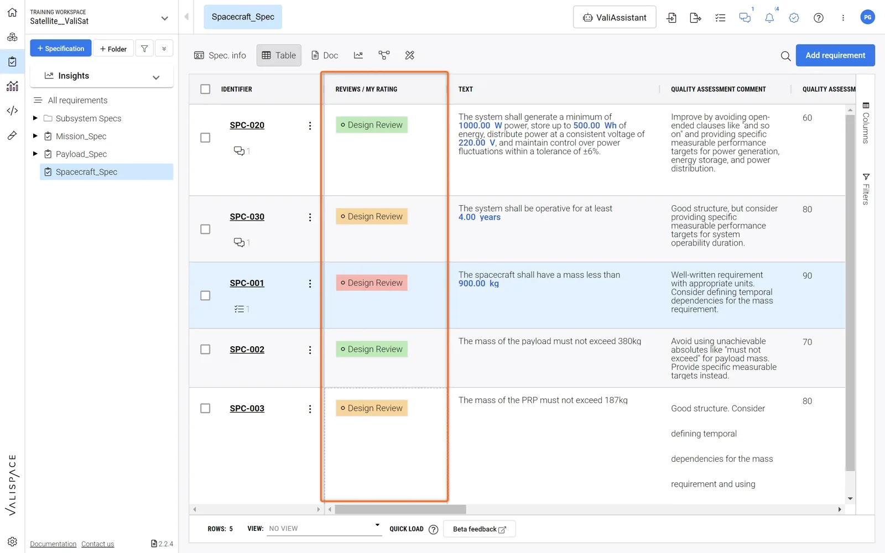
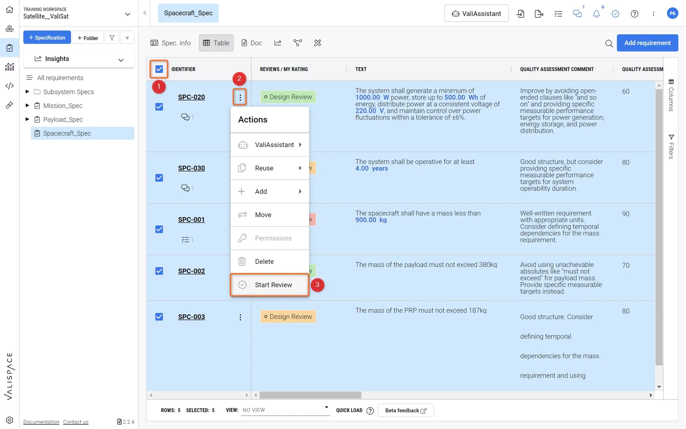

Impact
- Six-figure contractone of three features behind the deal
- Shipped 2021 · live 2026kept after the Altium acquisition
- The logic held upbackend developers found later changes easy to add
The problem
Requirements engineers write each requirement in a fixed form, like a clause in a standard: “The wave height shall be measured with an accuracy of at least 0.30 m.” Each one is then reviewed and verified.
A review checks how mature a set of requirements is before the next step. The industry usually does this in separate software that needs its own training. At Valispace, now Altium, we built it into the software where the requirements already live.
Workflow
- Review. A set of review objects, requirements or values, assessed together
- Moderator. Creates the review, adds the objects, assigns reviewers and approvers, sets a due date
- Reviewer. Rates each object and comments. One object can have several reviewers
- Approver. Decides when the review is final and closes it. A review can have several approvers
The shipped feature


Key design decisions
I asked both sides what they need to understand: the manager who plans reviews and the engineer who is assigned one.
- Overview and focus. Managers see progress across reviews; engineers see what is newly assigned and can prioritize
- Repeatable setups. The same type of review or team can be planned again without starting over
- Discussion in place. Questions are settled where the work happens, with fewer meetings, emails and delays
- Redo when needed. Teams can align on whether a review has to be repeated
- Flexible or locked. Managers pick reviewers freely or from a predefined group, and can lock decisions in the interface
- Transparent and traceable. Every rating and sign-off is logged with name and time
Companies of different sizes and industries use the software, so it needed enough flexibility. Hardware failures and delays are costly, so every choice also had to stay transparent and controllable.
Process
Interviews with managers and assigned engineers, user stories, wireframes and tested Figma prototypes. Experts and I wrote the logic in the users' words.
Lessons learned
Bring expert users in early, and get to design sooner.
- Design even earlier
Next time I would add early code prototypes, so development constraints reach the design before the build.
- Test across companies
Views per role made the difference. Testing with several companies and roles would keep the design from fitting only one customer.